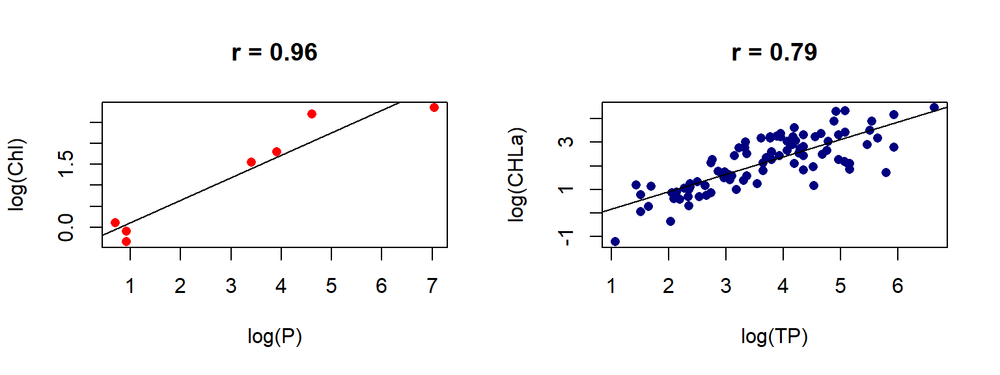
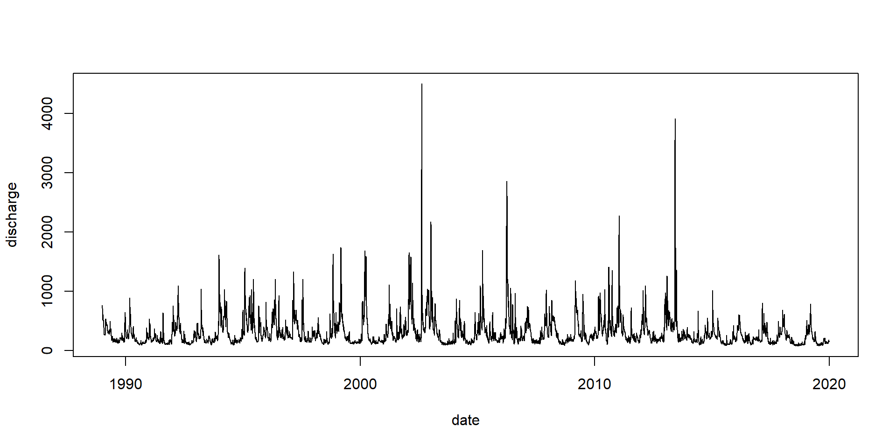
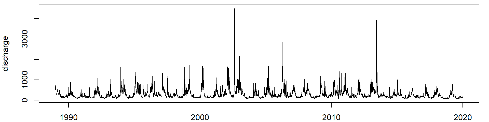
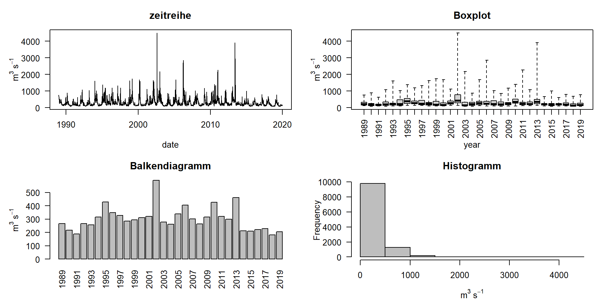
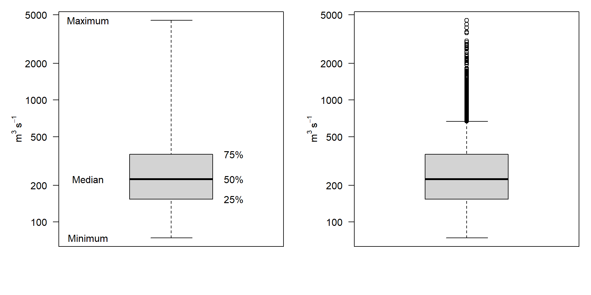
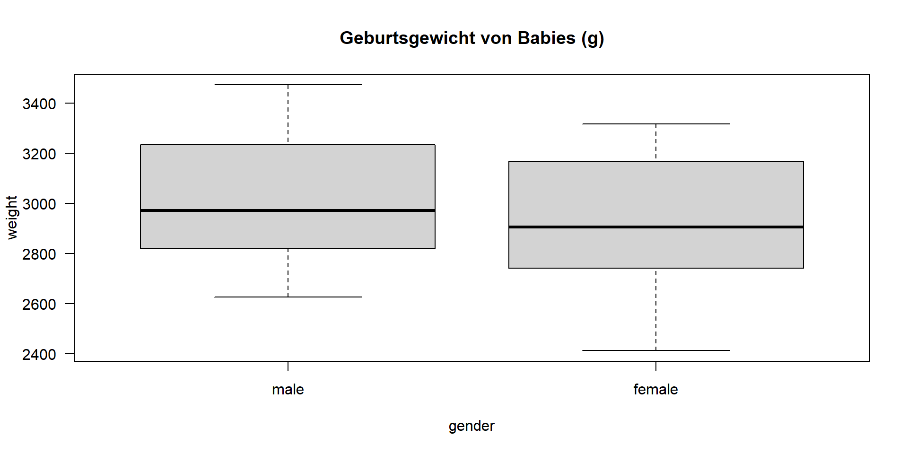

01-Einführung
Applied Statistics – A Practical Course
Thomas Petzoldt
2025-04-04
Vorbemerkungen
Ziele des Kurses
- Einführung in die „Datenwissenschaft“
- Statistische Konzepte und ausgewählte Methoden
- Statistische Parameter
- Verteilungen und Wahrscheinlichkeiten
- Statistische Tests
- Auswahl von Modellen
- Praktische Erfahrungen
- Daten-Strukturen
- Grundlagen der Sprache R
- Anwendungen mit realen und simulierten Datensätzen
\(\Rightarrow\) Praktisches Verständnis und „statistisches Gefühl“,
\(\rightarrow\) Wichtiger als auswendig gelernte Fakten.
Themen
- Grundlegende Konzepte der Statistik
- Eine Einführung in R
- Statistische Parameter und Verteilungen
- Lineare Modelle
- Varianzanalyse
- Nichtlineare Regression
- Zeitreihenanalyse
- Multivariate Statistik
Material
- Folien, Tutorien: tpetzoldt.github.io/elements
- Übungen: tpetzoldt.github.io/element-labs
\(\rightarrow\) Folien und Übungen werden regelmäßig aktualisiert, je nach Fortschritt des Kurses. Kommentare sind willkommen.
Schriftliche Klausur am Ende des Semesters
\(\rightarrow\) > 50% praktische Fragen
\(\rightarrow\) Nehmt an den Übungen teil!
Fragen?
Warum Statistik?
\(\rightarrow\) ein paar Beispiele, bevor wir anfangen
Ein einführendes Beispiel
Täglicher mittlerer Abfluss der Elbe, Pegel Dresden, Fluss km 55,6
date, discharge
1806-01-01, 472
1806-01-02, 1050
1806-01-03, 1310
1806-01-04, 1020
1806-01-05, 767
1806-01-06, 616
...
2020-10-11, 216
2020-10-12, 204
2020-10-13, 217
2020-10-14, 288
2020-10-15, 440
2020-10-16, 601
2020-10-17, 570
2020-10-18, 516
2020-10-19, 450
2020-10-20, 422
2020-10-21, 396
2020-10-22, 372
2020-10-23, 356
2020-10-24, 357
2020-10-25, 332
2020-10-26, 303
2020-10-27, 302
2020-10-28, 316
2020-10-29, 321
2020-10-30, 331
2020-10-31, 353
2020-11-01, 395\(>\) 70.000 Messungen. Wie können wir das analysieren und was bedeutet das?
Datenquelle: Bundesanstalt für Gewässerkunde
Grafik über 20 Jahre
Abfluss der Elbe, Pegel Dresden, Datenquelle BfG
Was sagen uns diese Daten?
- Wie hoch ist der mittlere Abfluss? → Mittelwerte
- Wie groß ist die Variation in den Daten? → Varianz
- Wie wahrscheinlich sind Dürren oder Überschwemmungen? → Verteilung
- Wie präzise sind unsere Vorhersagen? → Konfidenzintervalle
- Welche Faktoren beeinflussen den Abfluss? → Korrelationen
Wie soll man anfangen?

- Mittelwert: 224
- Median: 224
- Standardabweichung: 253
- Spannweite: 2, 4500
Welche dieser Parameter sind am besten geeignet?
Grafiken
Boxplots
- Beachte die logarithmische Skala von y!
- In der rechten Version reichen die Whisker bis zum einem Datenpunkt, der nicht weiter als das 1,5-fache des Interquartilabstandes der Box entfernt ist.
Drei Wege mit der Statistik zu arbeiten
Deskriptive Statistiken und Grafiken
- Diagramme, wie in den Beispielen
- Mittelwerte, Standardabweichungen, …
- Rohdaten interpretieren
Hypothesentests
- Unterscheidung zwischen Effekten und zufälligen Schwankungen
- Ergebnisse überzeugender machen
Statistische Modellierung
- Messung der Größe von Effekten (z. B. Klimatrends)
- Modelle erstellen, die Abhängigkeiten zusammenfassen
- Maschinelles Lernen
Statistische Hypothesentests
Wie wahrscheinlich ist es, dass unsere Hypothese untersützt wird?
- Umwandlung einer wissenschaftlichen in eine statistische Hypothese
- Schätzung der Wahrscheinlichkeit (p-Wert) einer bestimmten Hypothese
Beispiele
- Ist eine medizinische Behandlung erfolgreich oder nicht? → \(\chi^2\)-Test
- Erhöht eine spezielle Nahrung den Ertrag einer Fischzucht? → t-Test
- Welche Faktoren (z. B. Futter, Temperatur, pH-Wert) einer kombinierten Behandlung beeinflussen das Wachstum von Wasserlebewesen? → ANOVA
- (Wie) hängt die beobachtete Algenbiomasse vom Phosphor ab? → Korrelation und Regression
Statistische Modellierung
Anpassung eines statistischen Modells an beobachtete Daten
- Wahl einer geeigneten Modellierungsstrategie
- Spezifizierung statistischer Modelle
- Messung der Effektgrößen
- Auswahl eines optimalen Modells aus verschiedenen Modellkandidaten
Beispiele
- Anpassung einer Verteilung an jährliche Abflussdaten, um das 100-jährige Hochwasser zu schätzen.
- Anpassen eines ANOVA-Modells an experimentelle Daten
-> welcher Faktor beeinflusst das Ergebnis am stärksten? - Anpassen eines multiplen linearen Modells an Klimadaten
-> wie stark unterscheiden sich Klimatrends zwischen geografischen Standorten?
Beispiel: Vergleich zweier Mittelwerte
- Ein gegebener Datensatz (Dobson, 1983) enthält das Geburtsgewicht (in g) von 12 Jungen und 12 Mädchen.
- Hat der Gewichtsunterschied etwas mit dem Geschlecht der Babys zu tun oder handelt es sich um Zufall?
Beispiel: Korrelation und Regression
- Abhängigkeit der Chlorophyllkonzentration in Seen vom Phosphor
- links ein regionaler Datensatz (Koschel und Scheffler 1985)
- rechts ein internationaler Datensatz (Vollenweider und Kerekes 1980).
- Welche der Abbildungen hat eine größere Aussagekraft? Warum?
Wie geht das praktisch?
- Daten
- Mathematik
- Datenverarbeitung
Welche Datenstruktur ist besser?
Wide-Format
| station | 2021 | 2022 | 2023 |
|---|---|---|---|
| A | 14 | 14 | 10 |
| B | 10 | 5 | 8 |
| C | 1 | 10 | 2 |
| D | 11 | 8 | 4 |
| E | 13 | 7 | 7 |
Long-Format
| year | station | value |
|---|---|---|
| 2021 | A | 14 |
| 2021 | B | 10 |
| 2021 | C | 1 |
| 2021 | D | 11 |
| 2021 | E | 13 |
| 2022 | A | 14 |
| 2022 | B | 5 |
| 2022 | C | 10 |
| 2022 | D | 8 |
| 2022 | E | 7 |
| 2023 | A | 10 |
| 2023 | B | 8 |
| 2023 | C | 2 |
| 2023 | D | 4 |
| 2023 | E | 7 |
Beispiel: Ein Experiment zum Algenwachstum
Wide-Format
| treat | replicate 1 | replicate 2 | replicate 3 |
|---|---|---|---|
| Fertilizer | 0.020 | -0.217 | -0.273 |
| F. open | 0.940 | 0.780 | 0.555 |
| F.+sugar | 0.188 | -0.100 | 0.020 |
| F.+CaCO3 | 0.245 | 0.236 | 0.456 |
| Bas.med. | 0.699 | 0.727 | 0.656 |
| A.dest | -0.010 | 0.000 | -0.010 |
| Tap water | 0.030 | -0.070 | NA |
- NA bedeutet „nicht verfügbar“ (not available), d.h. ein fehlender Wert
Daten im Long-Format
Vorteile
- sieht „dumm“ aus, ist aber besser für die Datenanalyse
- abhängige Variable growth und
Erklärungsvariable treat deutlich sichtbar - Modellformel:
growth ~ treat - leicht erweiterbar auf \(>1\) Erklärungsvariable
| treat | rep | growth |
|---|---|---|
| Fertilizer | 1 | 0.020 |
| Fertilizer | 2 | -0.217 |
| Fertilizer | 3 | -0.273 |
| F. open | 1 | 0.940 |
| F. open | 2 | 0.780 |
| F. open | 3 | 0.555 |
| F.+sugar | 1 | 0.188 |
| F.+sugar | 2 | -0.100 |
| F.+sugar | 3 | 0.020 |
| F.+CaCO3 | 1 | 0.245 |
| F.+CaCO3 | 2 | 0.236 |
| F.+CaCO3 | 3 | 0.456 |
Warum das Long-Format?
- Klar und konsistent:
- vermeidet Duplikationen
- Datenstruktur einfacher zu verstehen
- Flexibel:
- für verschiedene statistische Analysen, z.B. ANOVA, multiple Regression, Zeitreihen
- bei Bedarf leicht in breite Formate zu transformieren
- Kompatibel:
- moderne Datenanalysetools wie R und Python bevorzugen das long-Format
- kompatibel mit Datenbanksystemen
Deshalb:
- Versuche das wide-Format zu vermeiden! Es kann zu Inkonsistenz und Verkomplizierung der Analyse führen.
- Bereinige die Daten vor der Analyse und konvertiere Tabellen aus dem wide-Format in das long-Format.
\(\rightarrow\) Übung mit Zeitreihen der Elbe.
Mathematik
- Lineare Algebra: Die Grundlage für viele statistische Methoden, insbesondere Matrizen und Vektoren.
- Calculus: Optimierungsprobleme, Ableitung statistischer Formeln, Verständnis des Verhaltens von Funktionen.
- Numerische Analyse: Implementierung von statistischen Methoden auf Computern, insbesondere bei großen oder komplexen Datensätzen.
- Wahrscheinlichkeitstheorie: Stichprobenziehung und Modellierung von Daten, Verständnis statistischer Schlussfolgerungen, Entwicklung von Algorithmen.
- Statistische Modellierung: Regressionsanalyse, Zeitreihenanalyse, bayesianische Modellierung, maschinelles Lernen.
\(\rightarrow\) Die richtige Verwendung fertiger Software erfordert grundlegendes Verständnis.
Datenverarbeitung
Benötigte Software
- Ein Tabellenkalkulationsprogramm, Excel oder LibreOffice https://www.libreoffice.org/
- Das R-System für Datenanalyse und Grafiken https://www.r-project.org
- RStudio zum benutzerfreundlichen Arbeiten mit R https://posit.co/download/rstudio-desktop/

Warum R?
- Statistiker bezeichnen es als „lingua franca of computational statistics“.
- Äußerst leistungsfähig
- Kein anderes System verfügt über so viele statistische Methoden
- Wird in der statistischen Forschung verwendet
- Frei (OpenSource)
- Frei zu benutzen
- Frei zu modifizieren
- Frei, etwas beizutragen
- Weniger kompliziert als es auf den ersten Blick erscheint:
- Ja, man braucht Kommandozeilenprogrammierung
- aber: schon eine einzige Zeile kann viel bewirken
- große Anzahl Bücher und Online-Skripte
Im Gegensatz zu anderen Systemen ist Copy & Paste erlaubt – aber bitte zitieren.
Bücher
Statistische Methoden
- Sehr gut lesbare Einführungen
- Dalgaard, P., 2008: Introductory Statistics with R. Springer, New York, 2nd edition. (Volltext der 1. Auflage frei verfügbar)
- Verzani, J. (2019). Using R for introductory statistics. CRC press.
- Sehr gut verständliche Einführung, insbesondere in die Regressions- und Zeitreihenanalyse:
- Kleiber, C. and Zeileis, A., 2008: Applied Econometrics with R, Springer Verlag, New York. https://link.springer.com/book/10.1007/978-0-387-77318-6
R Programmierung
- Einführung in die Datenwissenschaft mit dem modernen „Tidyverse“-Ansatz:
- Wickham, H., Çetinkaya-Rundel, M and Grolemund, G, 2023: R for Data Science. Free ebook: https://r4ds.hadley.nz/